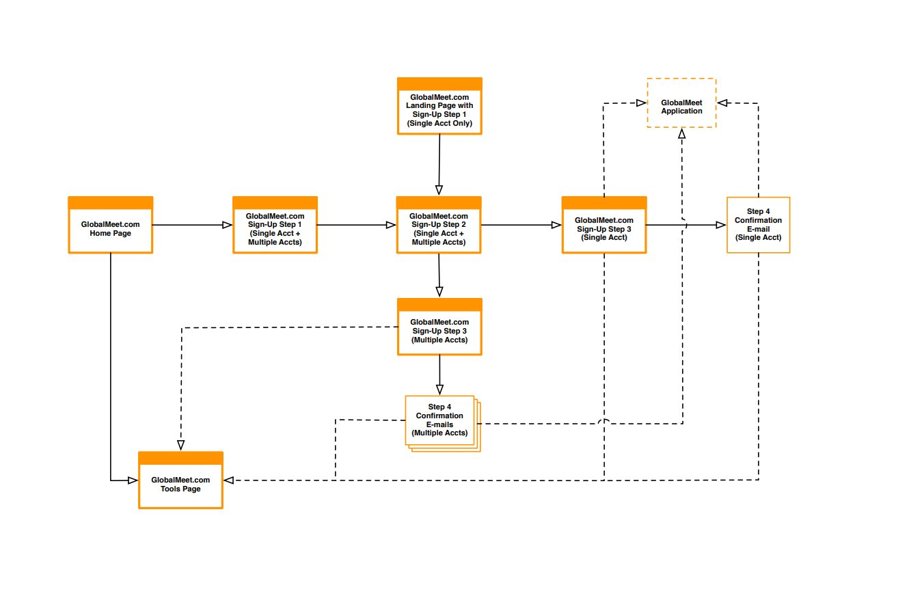

PGi, iMeet and GlobalMeet
Redesigns for PGi, the meeting company, and its iMeet and GlobalMeet products: the websites, a mobile design, and a cleaner path from trial to sign-up.
ProductProgram deliveryCreative production
3sites redesigned: PGi, iMeet, GlobalMeet
1mobile design
1sign-up funnel, mapped and annotated
Pitchto launch, SOW to QA
The problem
- PGi's sites had to sell three products and turn free trials into customers.
- The work ran through third-party developers.
What I did
- Wrote estimates, requirements and SOWs, and ran each project from pitch to launch.
- Managed design and development for the PGi website and mobile design.
- Set the strategy for the GlobalMeet funnel, and annotated the wireframes screen by screen.
- Ran final QA on every deliverable.
- Also ran the Char-Broil social media sweepstakes.
What changed
- Three redesigned sites and a mobile design.
- A sign-up flow the developers could build straight from.

